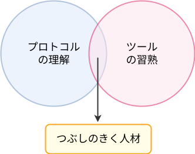

flowchart LR A[Ch.1<br>HTTPを理解する] --> B[Ch.2<br>tcpdumpで観察する] B --> C[Ch.3<br>nmapとhping3で送る]
Unix Tools 104 – #3 nmap, hping3
パケット操作で学ぶ
ネットワークスキャンと低レイヤー実験の基礎
Shintaro Watanabe
2026年3月9日
はじめに
- インターネット関連プロトコルを理解する重要性が高まっている。
- 仮想化の普及で、インフラ屋だけでなくアプリ屋にも。

出典: MDN Web Docs – HTTP Layers, CC-BY-SA 2.5
この授業の目的
- プロトコルを文書だけで理解するのは退屈。
- Excelの手順書だけを頼りにツールを使うのは危うい。
- 「新しい」Unixツールの実践を通じ、プロトコルを理解する。
- 今回は、観察するだけでなく、意図を持ってパケットを送る。

日程と時間帯
- 全4回で、計8つのツールを学習する。日程は次の通り。
| 日付 | 時間 | ツール | 学習事項 |
|---|---|---|---|
| 2025-10-10 | 18:00 - 19:00 | curl, jq | HTTPとJSON |
| 2026-01-16 | 18:00 - 19:00 | tcpdump, netcat | TCP/IP |
| 2026-03-09 | 18:00 - 19:00 | nmap, hping3 | パケット操作 |
| 2026-xx-xx | 18:00 - 19:00 | openssl, mitmproxy | TLSと認証機構 |
- 前半30分間を授業、後半30分間を演習とする。
- 自習可能な演習教材を準備した。
注意事項
- 何事も、たった1時間で上達することは不可能。
- 授業と演習とを自己研鑽のキッカケにしてください。
- スキャン先は、必ず演習用Dockerラボに限定すること。
聞かざるは之に聞くに若かず、之を聞くは之を見るに若かず、
之を見るは之を知るに若かず、之を知るは之を行うに若かず。
學は之を行うに至りて止む。
— 『荀子』儒效篇第八
パケット操作
この回の位置づけ
- Ch.1では、HTTPというアプリケーション層のプロトコルを学んだ。
- Ch.2では、TCP/IPスタックと
tcpdumpによる観察を学んだ。 - Ch.3では、こちらから意図を持ってパケットを送る。
なぜパケット操作を学ぶのか
- アプリ開発でも、通信経路やアクセス制御が原因の障害は珍しくない。
- 企業ネットワークでは、ICMP、TCP、HTTPの各段階で制御が入る。
- そのため、「どの層で止まっているのか」を切り分ける必要がある。
切り分けの例
- ホスト自体は生きているのか。
- 特定のポートは開いているのか。
- そのポートの先で、どのサービスが動いているのか。
- 返ってくるTCPフラグは、SYN/ACKか、RSTか、あるいは無応答か。
今回の2つの道具
nmap- ネットワーク探索とポートスキャンを自動化する道具
- 「何を知りたいか」を指定する
hping3- 任意のパケットを自分で作って送る道具
- 「どんなパケットを送るか」を指定する
nmap
nmapの全体像
nmapは、ネットワーク調査ツールである。- 代表的な仕事は次の通り。
- ホスト発見
- ポートスキャン
- 状態判定
- サービス/バージョン推定
- OS推定
- スクリプトによる追加調査
- 結果の保存
ホスト発見
- まず、「そこにホストがいるか」を調べる。
-snは、ポートスキャンを行わず、ホスト発見だけを行う。- これはPing Scanと呼ばれるが、ICMP Echo Requestだけを送るとは限らない。
pingとの違い
pingは、通常ICMP Echo Request / Echo Replyを使う。- 一方、
nmap -snは状況に応じて複数の手法を使う。- 同一セグメントのIPv4ではARPが優先される。
- それ以外ではICMPやTCPプローブが使われる。
- 同じ「死活確認」でも、送っているパケットは同じではない。
rootとnon-root
nmapは実行権限によって挙動が変わる。- rootで実行すると、raw packetを使ったスキャンができる。
- non-rootでは制約が大きく、
connect()ベースの手法に寄る。 - 実運用では、この違いを意識しないと結果を読み違える。
ポートスキャン
- ホストが見つかったら、どのポートが開いているかを見る。
open: 対象ポートで待ち受けしているプロセスがあるclosed: 対象ホストには到達できるが、待ち受けはないfiltered: 応答が返ってこないため、openかclosedかを判定できない
デフォルトでは何ポート見るのか
nmap target-webのようにポートを指定しない場合、全65535ポートを調べるわけではない。- デフォルトでは、使用頻度の高い1000個のTCPポートが対象になる。
- したがって、非標準ポートのサービスは見落とすことがある。
-sSと-sT
- rootでのデフォルトは
-sS。- SYNを送り、接続確立前の応答を見る。
- non-rootでのデフォルトは
-sT。- OSの通常ソケットAPIで接続する。
なぜ-sSが好まれるのか
-sTは完全なTCP接続を張る。-sSは、接続確立前の応答だけを見て判定する。- そのため、
-sSはスキャン用途に向いている。- より効率的
- 接続確立前の段階で状態を見られる
-sAで何が分かるか
-sAはACK scanである。- これは「開いているか」を見るスキャンではない。
- 主に、フィルタリングの有無を見る。
- 結果として出てくる代表例:
unfilteredfiltered
-Pnはいつ使うか
- 通常、
nmapはホスト発見を先に行う。 - その段階で応答がなければ、ポートスキャンに進まないことがある。
-Pnは、「ホストは起動しているもの」と仮定して調査を続けるオプション。- 例えば、非標準ポートだけでサービスが動いている場合に重要になる。
-sVと-O
-sV- サービスやバージョンを推定する
-O- TCP/IP応答の特徴からOSを推定する
SERVICE列は、まずポート番号にもとづく推定である。-sVを付けると、実際の応答内容からより正確に推定する。
スクリプトスキャン
--scriptを使うと、ポートやサービスの先にあるアプリケーション層を追加調査できる。- 今回はHTTP系を扱う。
http-title: タイトルを見るhttp-headers: レスポンスヘッダーを見るhttp-server-header:Serverヘッダーを見るhttp-enum: よく使われる公開パスを列挙するhttp-auth: 認証方式を調べる
結果の保存
nmapの結果は後で見返せるように保存できる。
-oN: 通常のテキスト形式-oA:.nmap,.xml,.gnmapをまとめて出力
hping3
hping3の全体像
hping3は、任意のパケットを自分で組み立てて送る道具である。nmapが「調査目的」を指定するツールだとすれば、hping3は「送信内容」を指定するツールである。- 触れる主な項目:
- TCP
- UDP
- ICMP
- 送信元IP
- 送信元/宛先ポート
- TTL
- フラグ
TCPフラグを操作する
- 代表的なフラグ:
SYNACKFINRST
- これらを個別に送ることで、相手の実装や状態を直接観察できる。
SYNを送る
-S: SYNフラグ-p: 宛先ポート-c: 送信回数- ポートが開いていれば、通常SYN/ACKが返る。
ACKやFINを送る
- 既存接続が無い状態でACKだけを送ると、通常はRSTが返る。
- FINだけを送っても、今回のような環境ではRSTが返ることが多い。
TCP以外にも使える
- ICMPモード
- UDPモード
hping3はTCP専用ツールではない。- プロトコルを切り替えながら疎通確認や挙動確認ができる。
送信元や周辺情報も変えられる
- 送信元ポート
- 送信元IPの偽装
- TTLの変更
- ただし、送信元IPを偽装すると返答はその偽装先へ返るため、通常は自分で応答観察できない。
tcpdumpと併用する
hping3だけでも応答は分かる。- しかし、理解が深まるのは
tcpdumpと並べたときである。 - 見るべきもの:
- こちらが送ったフラグ
- 相手が返したフラグ
S,S.,Rの対応関係
実務上のイメージ
- ICMP Echo Requestが社内で止められていることは珍しくない。
- それでも、
443/tcpへSYNを送れば、疎通確認できる場面がある。 - つまり、
hping3は教材用の道具ではなく、調査の引き出しでもある。
演習との接続
今回の演習で扱う範囲
- 講義では、
nmapとhping3の全体像を見た。 - 演習では、そのうち主要なものを実際に確かめる。
- 特に扱うのは次の範囲である。
-snとARP-sS,-sT,-sA-sV,--scripthttp-enum,http-authhping3のSYN/ACK/FINtcpdumpとの対応
演習ラボ
- スキャン先は外部ネットワークではない。
- Dockerの閉じたネットワークで実験する。
- 主な登場人物:
scanner:nmap,hping3,tcpdump,curl,nctarget-web: HTTP応答ありtarget-closed: 待ち受けなし
まとめ
今日のまとめ
- Ch.3では、観察から操作へ進んだ。
nmapは、ホスト発見からアプリケーション調査までを自動化する道具である。hping3は、パケットそのものを自分で作って送る道具である。- この2つを使うことで、ネットワーク障害の切り分け方が一段深くなる。